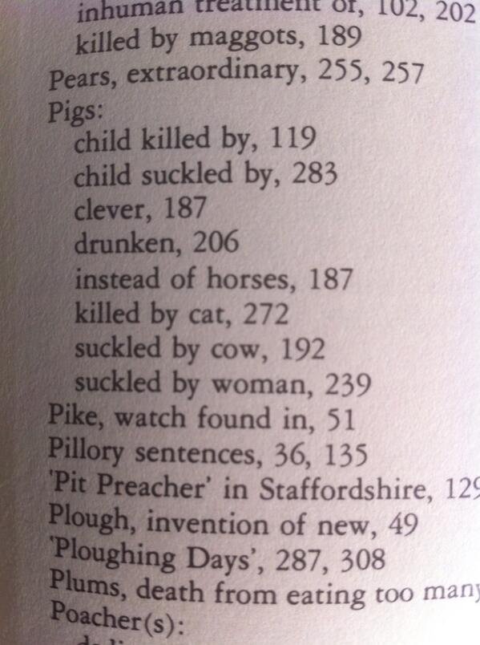

Tuesday, June the 24th, 2014
back to: title, date or indexes
I am indebted to Richard Carter for drawing to my attention this snapshot from the Tweeting account of Andrew Ray (@Some_landscapes). Mr Ray has been reading News from the English Countryside 1750–1850 compiled by Clifford Morsley:
